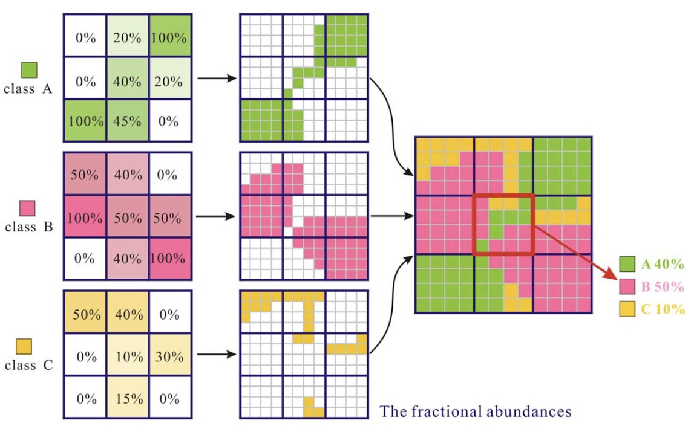
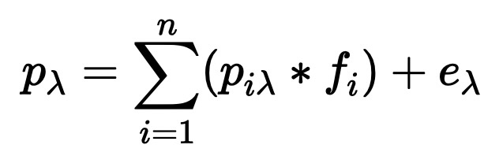
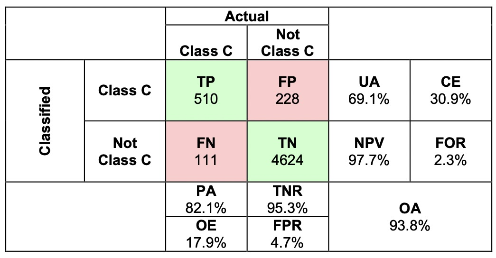
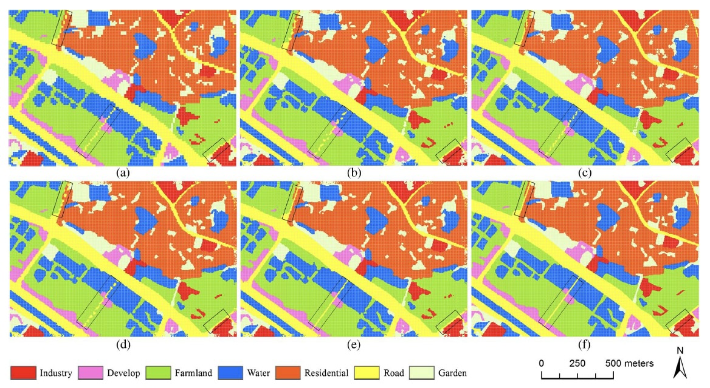
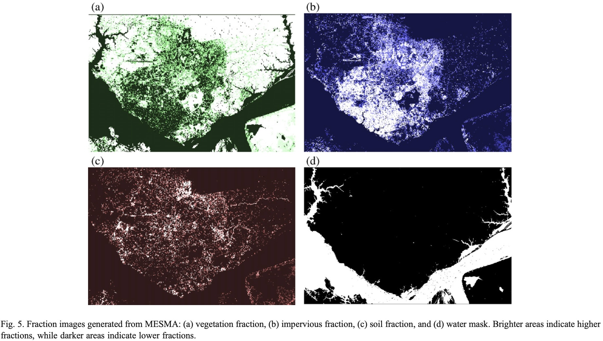

7 Week 7 - Classification 2
7.1 Summary
This weeks lecture continued to outline additional classification methods that can be applied in remote sensing. Given the extent of content that was covered, I’ve decided to focus this weeks learning diary on OBIA,sub-pixel analysis and accuracy assessment.
7.1.1 Object based image analysis (OBIA)
This technique takes the shapes (cells) into account based on either the similarity (homogeneity) or difference (heterogeneity) of the cells pixels. Often simple linear iterative clustering (SLIC) is used to calculate this as it measures the distance of a given point to the centre of the pixel. The image below compares the raw image on the left-hand side to the OBIA on the right. Here different objects, and thus land types can be identified; the red indicates buildings and residences whilst the green highlight the types of vegetation found within an area, differentiating between grass and trees.

Image source: Land Info. (2024)
7.1.2 Sub-pixel analysis
This technique combines percentage coverage of different classes and calculates the proportion of a particular landcover in a given pixel. Here reflectance is often measured by the “linear sum of end members that are weighted by the associated endmember fraction” (Lecture 8, slide 15)

Image source: Ai et al. (2014)
In order to calculate sub-pixel analysis, the following equation should be applied:

pλ = pixel reflectance
piλ = reflectance of end member i
fi = fractional cover of end member i
n = no. of end members
eλ = model error
7.1.3 Accuracy assessment
Once an output is produced from any classification technique, an accuracy value needs to be assigned. Often it will undergo an accuracy assessment which compares the generated values between two classes tested. The producer accuracy (PA) is vertical. when the classification results meet the expectations of the creator. It often recalls true positive rate or sensitivity. The Users oe consumer’s accuracy (UA) are horizontal pixels that are incorrectly classified. OA is the overall accuracy.
There are four possible outcomes that this model can generate and have been listed below:
True positive (TP) = the model predicts positive class correctly
True negative (TN) = the model predicts negative class correctly
False positive (FP) = the model predicts positive, but is it actually a negative class
False negative (FN) = the model predicts negative, but it is actually a positive class.
Calculations of different accuracy types: (Lecture 8, slide 23)
Producers accuracy = “the fraction of correctly classified pixels compared to the ground truth data” -> TP/TP+TN
User’s accuracy = “the fraction of correctly classified pixels relative to all other classifications” -> (TP+FP) -> TP/TP+FP
Overall accuracy = “the combination of correctly classified pixels” -> (TP+FP+FN+TN) -> TP+TN/TP+FP+FN+TN

Image source: Barsi et al. (2018)

Image source: Medium. (2020)
7.2 Applications
Ai et al. (2014) conducted a study where they performed sub-pixel analysis in addition to other methods, in order to map out different land cover types. The image below illustrates how land cover types are distributed in an urban area, which shows the concentration of urban infrastructure in relation to greenery and water access. In categorising different components for an urban system, it helps to distinguish the locations of certain land cover types, which can be useful in both urban planning and policy making.

Image source: Ai et al. (2014)
Additionally Powell et al. (2007) conducted a study in Brazil using sub-pixel analysis from Landsat imagery, where they calculated average values for V-I-S (Vegetation-Impervious-Surface Soil) between 1996 to 1999. Where the impervious fraction is dense, the vegetation fraction almost visually displays the inverse in the images below. In addition to this, they conducted an accuracy assessment to validate the classifications previously made, that corresponded to each tested component. Despite the difference in visual outputs between the two studies, implementing the sub-pixel analysis ensures that categories can be corrcetly classified and tested, which allows each pixel to be assigned to different value depending on the type of land cover that is being assessed. Although. Powell et al. study goes into deeper analysis as they assess the V-I-S, Ai et al. (2014) still provide suitable outputs to portray the proportions of pixels with different types of categories. Both applications of this technique provide high-reoslution insight which can aid in differentiating spatial objects and geographical features from one another.

Image source: Powell et al. (2007)
7.3 Reflection
Although there was a lot of content to cover this week, it was interesting to see how spatial objects can be visually identifies from one another. I particularly enjoyed learning about sub-pixel analysis and the accuracy assessment. Although this is a relatively technical component, it is not too daunting to experiment with, as the theory sometimes seems more complicated than the practical side of it. It does take some time to fully grasp how to apply each technique, but it won’t discourage me from trying. It is clear that in remote sensing there are several techniques that have to be considered and applied in order to produce accurate outcomes which can be visually interpreted. Additionally, this proves how practical both GEE and remote sensing is as a tool, as it is able to perform multiple calculations which help classify different land types, among many other features. I look forward to experiment with these techniques in the future, as it has shown me that remote sensing can be applied widely to both physical and human geography, both of which are relevant to urban spatial analysis.
7.4 References
Ai, B. et al. (2014) Improved sub-pixel mapping method coupling spatial dependence with directivity and connectivity. IEEE Journal of selected topics in Applied Earth Observations and Remote Sensing. 7(12), pg 4887- 4896. [Online] Available via: https://www.researchgate.net/publication/272183788_Improved_Sub-Pixel_Mapping_Method_Coupling_Spatial_Dependence_With_Directivity_and_Connectivity/download?_tp=eyJjb250ZXh0Ijp7ImZpcnN0UGFnZSI6Il9kaXJlY3QiLCJwYWdlIjoiX2RpcmVjdCJ9fQ
Barsi, A. et al. (2018) Accuracy dimensions in remote sensing. ISPRS. 42(3), pg 61-67. [Online] Available via: https://isprs-archives.copernicus.org/articles/XLII-3/61/2018/isprs-archives-XLII-3-61-2018.pdf
Land Info (2024) https://landinfo.com/image-classification-object-based-image-analysis-obia/
Medium (2020) https://medium.com/(wenzhao.li1989/accuracy-assessment-d164e492274b?)
Powell, R. L. et al. (2007) Sub-pixel mapping of urban land cover using multiple endmember spectral mixture analysis: Manaus, Brazil. Remote Sensing of Environment. 106(2), pg 253-267. [Online] Available via: https://www.sciencedirect.com/science/article/pii/S0034425706003142